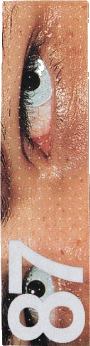
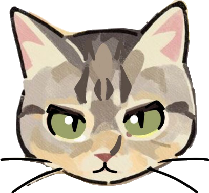

De allereerste stap is oriëntatie. Veel beginners slaan dit over omdat het minder spectaculair lijkt, maar het bespaart je zeeën van tijd. Maak er een absolute gewoonte van om te tekenen op basis van observatie: begin met wat je daadwerkelijk voor je ziet. Hierdoor sla je visuele informatie op in je geheugen, zodat je het later ook zonder model kunt natekenen.
Tip van de meester: Neem altijd een klein schetsboekje met je mee — ik noem dit ook wel het Observatorium. Bedenk van tevoren wat je gaat schetsen en maak gerust een gevarieerde mix van verschillende onderwerpen.
De sleutel tot snelle vooruitgang is het consistent gebruiken van referentiemateriaal. Vrijwel elke professionele kunstenaar zal je dit adviseren.
Video-tutorials zijn fantastisch, maar als je écht serieus vooruit wilt gaan, zijn er speciale websites met honderden referentiefoto's. Hier kun je specifieke tekensessies instellen met een ingebouwde timer per foto, of filteren op specifieke lichaamsdelen die je wilt bestuderen. Als je geen fysieke modeltekenlessen kunt bijwonen, is dit het perfecte alternatief.
Onderschat daarnaast de kracht van boeken niet. Zelf heb ik ontzettend veel geleerd door stap voor stap door anatomieboeken te bladeren en actief mee te tekenen.
Aanbevolen literatuur & bronnen:
Er zijn miljarden manieren om een tekening te schaduwen. Je kunt kiezen voor een eenvoudig verloop, cross-hatching (kruisarcering), cell-shading, of zelfs experimenteren met felle kleuren en halftonen.
Uiteindelijk maakt de techniek zélf niet eens zoveel uit. Wat een tekening écht goed maakt, is niet de methode, maar de vorm van de schaduwen die je ermee creëert.
In de basis heeft elke tekening te maken met twee soorten schaduwen. Neem bijvoorbeeld het hoofd van een kat, wat in feite een bol is:
Contrast is de sleutel: Kijk maar naar de neus van de kat. Deze werpt een harde schaduw die langzaam overvloeit in de grotere, zachte schaduw van de kop. Als je geen onderscheid maakt tussen deze twee soorten schaduw en alles bijvoorbeeld met een zachte brush inkleurt, ziet het er oké uit, maar mist er definitie.
Ongeacht de stijl of techniek die je kiest: zonder het juiste contrast tussen harde en zachte schaduwen verlies je de essentie van de vorm.

Kort samengevat komt het neer op drie pijlers: bewust kijken door te trainen met referentiemateriaal, de overstap maken naar complete scènes via filmshots, en het slim toepassen van het contrast tussen harde en zachte schaduwen. Zodra je stopt met gissen en begint te observeren, zul je merken dat je tekeningen direct meer diepte, vorm en overtuigingskracht krijgen. Veel succes met oefenen!